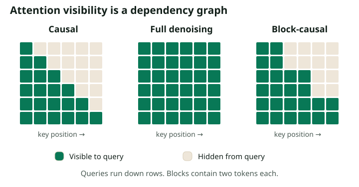

LLaDA, Dream, and the Design of a Diffusion LLM
The transformer is familiar; its information pattern changes
An autoregressive training example predicts the next token from a causal prefix. A masked diffusion example predicts clean tokens at their own corrupted positions from visible context on either side. Token embeddings, positional representations, attention layers, MLPs, normalization, and vocabulary projections remain useful components. The essential change is which information is available for each prediction and which targets receive loss.

Bidirectional attention does not reveal the answers if the scored tokens were first replaced by masks. Leaving clean targets visible elsewhere in a packed sequence, however, can create real leakage. For example, duplicating a response as “context” in the same attention-connected training example makes denoising artificially easy. Separate examples need an appropriate attention boundary or a documented packing objective.
A model-reading worksheet
| Decision | Record explicitly | Why it matters |
|---|---|---|
| Probability model | Masking, replacement, continuous latents, or blocks | Determines valid transitions and loss derivation |
| Prediction head | Clean token posterior, state ratio, or other target | Determines how predictions become sampler parameters |
| Training history | From scratch or converted; data and compute | Determines what prior language knowledge was inherited |
| Decoder | Steps, blocks, temperature, selection, correction | Determines the measured quality and latency |
LLaDA: a from-scratch case study
The original LLaDA paper trains 1B- and 8B-parameter masked diffusion models from scratch. Its denoiser uses a transformer without a causal attention mask. Pretraining corrupts text at varying masking ratios; supervised fine-tuning keeps prompts visible and corrupts responses. The 8B model is pretrained on 2.3 trillion tokens. These facts make it a useful example of building language ability directly under a diffusion objective.
The experimental lesson is narrower than “diffusion wins.” A from-scratch result demonstrates that next-token prediction is not the only training formulation capable of supporting substantial language-model behavior. It does not isolate the effect of the objective from tokenizer, data, optimization, or architecture choices in every comparison.
Dream: a checkpoint-adaptation case study
Dream 7B instead uses autoregressive initialization and introduces training changes including context-adaptive noise scheduling. It is a useful case study in converting existing language knowledge to a denoising task. The official repository provides the concrete model and evaluation implementation to inspect alongside the paper.
These two examples answer different questions. Training from scratch asks whether the diffusion objective can acquire language ability. Conversion asks how much existing ability can be retained and adapted when the visible-context distribution and prediction task change. A fair resource comparison of converted models should report both inherited pretraining and conversion compute.
Why conversion requires training
Imagine a checkpoint trained to predict the word after “the answer is.” At inference in a denoising model, the input might instead be “[MASK] answer [MASK] forty-two.” Its hidden states now mix information from the right, encounter unfamiliar mask patterns, and need to emit a distribution at a different target alignment.
A conversion procedure must settle at least three issues. First, align output positions: a causal model's logit at position $i$ usually supervises token $i+1$, whereas a denoiser may supervise the clean token at $i$. Second, expose the network to the corruption levels it will see when sampling, including highly masked inputs. Third, ensure the attention pattern during training matches the intended inference pattern. Merely toggling a causal flag addresses only a small part of this change.
When inspecting code, follow one example tensor all the way through the loss. Ask which input token sits under each logit, which clean token is its label, and which labels are excluded. Model class names can conceal an inherited shift in the logits.
Special tokens are part of the generative specification
Distinguish the input corruption symbol from padding and from end-of-sequence. A mask means “infer this unknown token”; padding means “this position is outside the example”; EOS means “the sequence ends here.” Treating them as interchangeable can train the model to end too early, attend to artificial padding, or produce masks as ordinary output.
For the idealized derivation in this series, the output vocabulary excludes masks. Production checkpoints may share input and output embedding tables, then suppress invalid outputs in a model-specific way. Before reusing a generic sampler, verify the allowed output IDs, BOS/EOS behavior, prompt template, and whether time is explicitly provided.
How the foundational papers fit together
| Work | Question it helps answer | Series connection |
|---|---|---|
| D3PM | How can corruption be defined on discrete states? | Part 1 |
| MDLM / MD4 | How does absorbing diffusion simplify to masked cross-entropy? | Part 2 |
| SEDD | What replaces the continuous score? | Part 4 |
| Discrete Flow Matching | How can posteriors define probability transport rates? | Part 4 |
| Block Diffusion | How can the joint factorize over blocks? | Part 7 |
This is a map of foundational design ideas from the cited papers, not a current leaderboard or an exhaustive release history. Later model versions can change these decisions; use their specific technical reports and code rather than assuming a family name fixes the architecture.
Read empirical claims at the scale of the experiment
A reversal task, a coding benchmark, and broad instruction following measure different behaviors. Arbitrary-order prediction makes certain conditioning patterns convenient, but it does not prove an ability to reason backward correctly on every problem. Similarly, an increase in quality with more denoising steps can reflect reduced sampling error, increased opportunity to use context, or a changed decoder policy; it need not mean the model performed a longer logical proof.
Check your understanding: Two models have the same parameter count. Is that enough to compare the efficiency of their training objectives?
No. Match or report training tokens, data quality, inherited checkpoint compute, context length, vocabulary size, active parameters, optimizer setup, and hardware efficiency. The denoising estimator also changes how many positions provide direct supervision per forward pass.
Make the model conditional
Continue to conditioning, infilling, and guidance. That chapter specifies what should stay fixed, what can change, and what distribution each procedure aims to sample.